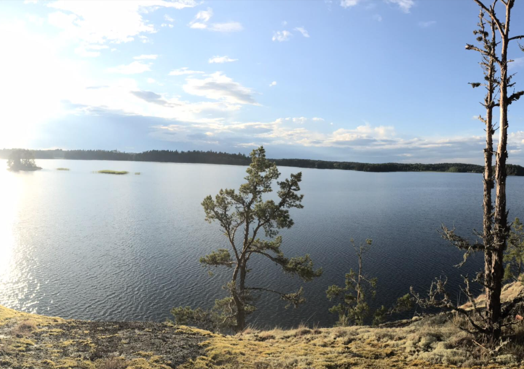
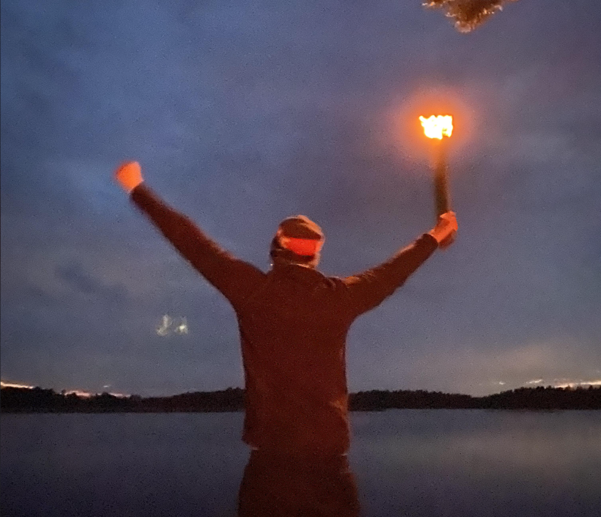

Prästön, belägen i Båven, utgör en central punkt för fritidsaktiviteter med tydlig inriktning på konsumtion av öl
och rom-cola. Ön är särskilt väl lämpad för camping, grillning och allmänt avkopplande verksamhet, där löst folk
med hög konsekvens intar större mängder dryck i samband med matlagning och naturnära samkväm.


Den ursprungliga vegetationen på ön har genom åren minskat avsevärt, huvudsakligen till följd av en omfattande och
oreglerad vedanskaffning för grilländamål. Tidigare förekommande buskage och mindre träd har successivt övergått
från att vara en del av ekosystemet till att utgöra bränsle för burgartillagning. Detta har lett till en viss
ekologisk omvandling, där vedförrådet på ön numera består av det som nyligen har blåst omkull eller ännu inte
upptäckts av resursförvaltande besökare.
Trots den gradvisa skogsförlusten kvarstår Prästön som en högt uppskattad destination, där bastubadare, båtfolk och
allmänt törstiga individer finner en stabil bas för vätskeintag och matlagning. Öl- och rom-colakonsumtionen sker
med sådan regelbundenhet att ön, rent statistiskt, sannolikt uppvisar en högre promillehalt än det omgivande
vattnet.